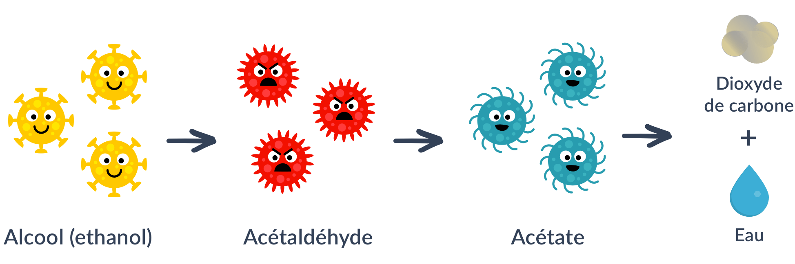
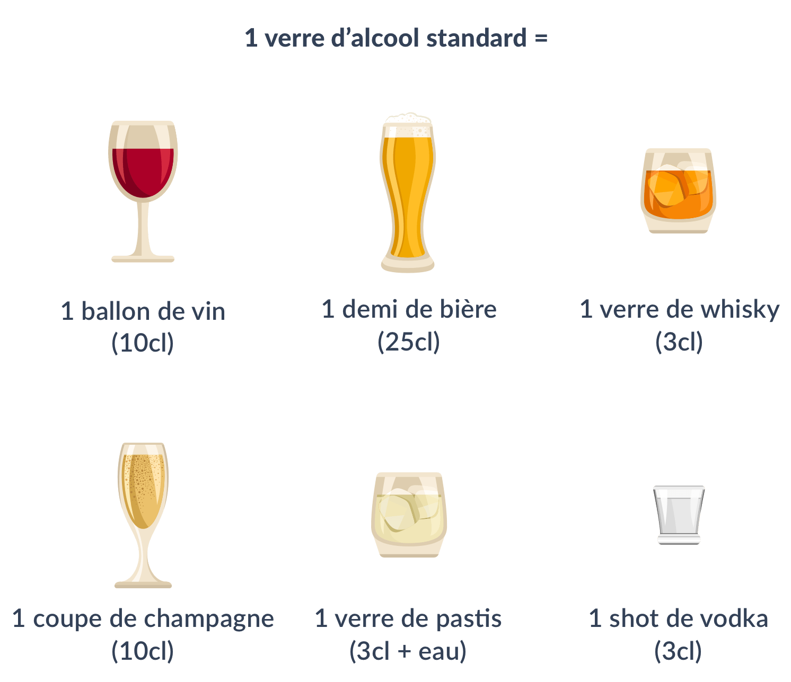

Un verre d’alcool à la main, on trinque en disant « À votre santé ! ». On entend souvent qu’un verre de vin par jour serait bon pour la santé. Pourtant, en parallèle, on est régulièrement informés sur les conséquences dramatiques de la consommation d’alcool. Alors, quels sont les réels effets de l’alcool ? L’alcool est-il bon ou mauvais pour la santé ? Voici notre synthèse, rédigée avec l’aide du nutritionniste Anthony Berthou.
Les effets de l’alcool sur le corps
Lorsqu’il est ingéré, l’alcool arrive dans l’estomac. Une partie de l’alcool passe ensuite immédiatement dans le sang : celui-ci va alors être dirigé via les vaisseaux sanguins vers le foie, le cerveau et le pancréas. Il va ensuite commencer à se décomposer et à se transformer en acétaldéhyde, une molécule cancérigène et toxique pour le foie. L’acétaldéhyde va continuer à se décomposer en acétate et va finalement être éliminé par l’organisme sous forme de dioxyde de carbone et d’eau.

Le foie a besoin d’environ une heure pour éliminer une unité d’alcool (soit 10g). Mais, lorsque la quantité d’alcool est trop importante (ou selon les individus), notre foie a besoin de plus de temps pour éliminer tout l’alcool. Une partie de l’acétaldéhyde reste dans notre sang et dans nos tissus (dont le cerveau) avant de pouvoir être éliminée. Elle va alors contribuer au développement des radicaux libres, des molécules qui sont impliquées dans de nombreuses maladies : cancers, maladies dégénératives comme la maladie d’Alzheimer, maladies cardio-vasculaires…
L’alcool en excès est notamment associé à une hausse du risque de cancer de l’oesophage, du foie, du sein, du larynx, ou encore de cancers colorectaux. La consommation d’alcool augmente aussi le risque de maladies cardio-vasculaires, de cirrhose et de troubles cognitifs à long terme (perte de mémoire, difficultés d’attention, etc.).
Le risque lié à la consommation d’alcool est cependant variable d’un individu à l’autre car il dépend aussi de différents facteurs, notamment :
- La prédisposition génétique
- L’hygiène de vie générale, et en particulier l’alimentation
Un verre d’alcool, c’est quoi ?
Quelle que soit la boisson alcoolisée, un verre standard représente à peu près la même quantité d’alcool soit 10g à 13g.

Le vin rouge est-il meilleur ?
Le vin rouge contient du resvératrol, un puissant antioxydant de la famille des polyphénols présent dans la peau et les pépins de raisin et qu’on retrouve ensuite dans les tanins. Or, les antioxydants vont permettre de protéger nos cellules de l’effet des radicaux libres (voir notre article sur les antioxydants). Les vins rouges jeunes et tanniques, ainsi que le cépage pinot noir, sont les plus intéressants car ce sont ceux qui contiennent le plus de resvératrol.
Cependant, les bénéfices que pourraient potentiellement apporter la consommation modérée de vin rouge dépendent de la prédisposition génétique et de l’hygiène de vie générale. Au vu des effets néfastes que peut par ailleurs engendrer la consommation d’alcool, il largement largement recommandé de combler nos apports en antioxydants via l’alimentation dans laquelle les antioxydants sont nombreux.
Privilégiez les repas pour consommer de l’alcool !
Il est conseillé de consommer l’alcool pendant les repas plutôt qu’en dehors. En effet, l’alcool est ainsi dilué avec l’alimentation que nous ingérons. Cela permet une diffusion plus lente de l’acétaldéhyde, ce qui favorise alors sa tolérance.
Attention aux sulfites
Le vin contient naturellement des sulfites, produits lors du processus de fabrication. Mais, d’autres sulfites sont généralement ajoutés afin de servir de conservateurs. Ces composés à base de soufre peuvent provoquer des réactions d’intolérance voire des réactions allergiques (plaques cutanées, dermatites, urticaires, asthme, conjonctivites, migraines, etc.). Une part importante de la population y serait sensible.
Les teneurs résiduelles de sulfites dans le vin sont très variables en fonction de la nature et de la qualité des vins, les vins liquoreux en étant les plus riches. Malheureusement, aucune réglementation n’impose d’afficher la teneur en sulfites et il n’est donc pas possible de connaître la quantité exacte des vins. Un verre de 20cl de vin rouge conventionnel peut ainsi contenir jusqu’à 32 mg de sulfites, soit 70% de la dose journalière admissible pour une personne de 65 kgs. On peut donc très rapidement se retrouver exposé à des quantités très importantes de sulfites, dépassant largement les doses recommandées.
Les sulfites sont également autorisés dans le vin biologique, mais la réglementation est un peu plus stricte. Par exemple, elle impose un dosage maximal de 110mg/L pour un vin rouge biologique au lieu de 160mg/L pour un vin rouge conventionnel. La réglementation du vin issu de biodynamie va encore plus loin en limitant l’apport à moins de 50% des teneurs conventionnelles (70mg/L pour le vin rouge par exemple). De même, le label Nature & Progrès va plus loin que le label bio conventionnel en limitant davantage la quantité de sulfites autorisés.
C’est quoi la biodynamie ?
La biodynamie pousse la démarche du bio encore plus loin. Cette démarche porte une attention particulière à la qualité du sol, et à l’échange entre la terre et la plante. Ainsi, la biodynamie utilise des préparations à base de plantes et de bouses de vaches qui sont ensuite enfouies dans la terre pour l’enrichir et aider ainsi la vigne à mieux se développer. La biodynamie prend aussi en compte le mouvement des astres pour établir les calendriers de plantation.
Le principal label biodynamique est le label Demeter. Son cahier des charges est plus strict que le label bio européen : les intrants y sont encore plus limités. Il existe également le label Biodyvin, moins courant et un peu moins exigeant que le label Demeter concernant la quantité de sulfites.
Le vin naturel va quant à lui encore plus loin que le vin biodynamique, puisqu’il combine les deux méthodes de l’agriculture biologique et de la biodynamie.
Enfin, de plus en plus de vignerons proposent des vins dits naturels, ne rajoutant pas ou très peu de sulfites (maximum 30 mg/L pour le vin rouge par exemple). Malheureusement, cela nuit parfois au goût du vin et à sa stabilité. Pour les identifier, il est généralement indiqué “vin nature” ou “sans soufre ajouté”.

En pratique
- Évitez au maximum la consommation d’alcool
- Si vous choisissez de consommer de l’alcool, optez plutôt pour du vin rouge et limitez votre consommation de vin à 5 verres par semaine (et à un verre maximum par jour, voire 2 en cas de gabarit important)
- Optez pour du vin bio issu de la biodynamie : moins contaminé en pesticides, il est aussi moins riche en sulfites.
- Choisissez du vin rouge jeune et tannique ou du pinot noir
- LoConte NK, Brewster AM, Kaur JS, Merrill JK, Alberg AJ. Alcohol and Cancer: A Statement of the American Society of Clinical Oncology. J Clin Oncol. 2018 Jan 1;36(1):83-93.
- Alcohol Consumption and the Risks of Adenocarcinoma and Squamous Cell Carcinoma of the Esophagus. Pandeya N, Williams G, Green AC, Webb PM, Whiteman DC; Australian Cancer Study. Gastroenterology. 2008 Dec 27.
- Ballard C, Lang I. Alcohol and dementia: a complex relationship with potential for dementia prevention. Lancet Public Health. 2018 Mar;3(3):e103-e104.
- Liu Y, Nguyen N, Colditz GA. Links between alcohol consumption and breast cancer: a look at the evidence. Womens Health (Lond). 2015 Jan;11(1):65-77.
- INSERM Expertise collective. Ed 2001. Synthèse : 277-325. Effets de l’alcool sur le système cardio-vasculaire : 175-203. Effets de l’alcool sur les performances cognitives du sujet âgé ; 165-73
- Chu, Q., O'Dwye, M., & Zeece, M. G. (1998). Direct analysis of resveratrol in wine by micellar electrokinetic capillary electrophoresis. Journal of agricultural and food chemistry, 46(2), 509-513.
- Scientific Opinion on the re-evaluation of sulfur dioxide (E 220), sodium sulfite (E 221), sodium bisulfite (E 222), sodium metabisulfite (E 223), potassium metabisulfite (E 224), calcium sulfite (E 226), calcium bisulfite (E 227) and potassium bisulfite (E 228) as food additives. EFSA Journal 2016; 14(4): 4438.
- Vally, Hassan and Neil LA Misso. “Adverse reactions to the sulphite additives” Gastroenterology and hepatology from bed to bench vol. 5,1 (2012): 16-23.
- Lester MR. Sulfite sensitivity: significance in human health. J Am Coll Nutr. 1995 Jun;14(3):229-32. Review. PubMed PMID: 8586770.

Merci pour cet excellent article.
quel est la teneur calorique de 10 g d’alcool ? est-il exact que l’éthanol se transforme finalement en sucre puis graisse ?
Merci pour ces précieux conseils et merci encore blomy pour votre franchise
Bonjour,
Je pense que l’alcool mérite un message beaucoup plus tranché. En effet j’ai été pendant 40 sapeur-pompier et l’alcool était à l’origine de beaucoup de drames sur lesquels j’ai eu à intervenir que ce soient bien sûr les accidents de la circulation, mais aussi les accidents du travail, les accidents domestiques, les différents familiaux, et la liste est longue.
Donc dire que l’alcool peut apporter certains bienfaits me semble tout à fait inapproprié.
De même que de dire aussi qu’une quantité raisonnable ne fait pas de mal car quelques fois les circonstances de la vie, divorce, décès d’un proche, chômage font glisser insidieusement vers une quantité plus importante avec les risques que cela comporte.
Donc le choix a été clair, je ne bois plus une goutte d’alcool. Mon épouse n’en a jamais bu . Et pourtant contrairement à ce que peuvent prétendre certains nous avons une vie sociale, quand nous sommes invités nos amis respectent notre choix et quand nous recevons nous ne proposons pas d’alcool et nous passons cependant de bonnes soirées. Apprenant cela un couple que nous connaissions a déclaré qu'(ils ne viendraient jamais chez nous s’il n’y avait pas d’alcool, ça tombe bien car je n’ai pas envie de fréquenter ce style de gens.
Voilà ce dont je voulais vous faire part mais je suis catégorique, l’alcool est dangereux et sans alcool la vie est belle.
C’EST BIEN PARLER DIDIER!
Mais je ne t’aime pas…
Un grand manque d’empathie de votre part
Presque toutes les violences sociales sont liées à l’alcool : les violences sexuelles, les maltraitances d’enfants, les violences dans les services d’urgence hospitalière, dans l’armée ou le monde sportif. Dans une vaste étude rassemblant plus de 9 300 dossiers judiciaires de 11 pays, il apparaissait que 62 pour cent des délinquants violents avaient consommé de l’alcool juste avant ou pendant leur délit.
Mince… moi qui pensais Blomy indépendant de tout loby… L’alcool reste un poison et une drogue, peu importe la quantité et la qualité, n’importe quel article scientifique vous le dira (contrairement à cet article) !
Je suis moi même grand consommateur et pro dépénalisation d’une autre drogue mais il ne faut pas se voiler la face.
Excellent article sur les effets pervers de l’alcool et comme disait notre regretté Coluche : » Le vin c’est obligatoire ». Merci blomy.
Le pire des ennemis c’est « l’habitude ». prendre un verre chaque jour « ça ne peut pas faire de mal! » et vient l’accoutumance, imperceptiblement une descente douce et insensible dans l’alcoolisme dépendant. j’ai trop d’exemples parfois cruels autour de moi. Soyez très prudents et circonspects avec le séduisant alcool et appréciez les délices de la vie avec discernement.
Merci pour ces précieux conseils et surtout de faire une synthèse. On entend tellement de choses via les médias et par ci par là qu’on ne sait jamais ce qu’il faut faire au final. Contrairement à vous, les journalistes ne finalisent que rarement leurs sujets car leur objectif est surtout de faire de l’audimat.
C’est un très bon commentaire c’est vrai le glyphosate et dangereux
Très bon article, je comprend maintenant pourquoi le vin blanc me rend malade. Merci Blomy
merci pour ce commentaire maisil reste quand même que le vin biio est un peu meilleur….
Très intéressant.
merci pour cet article intéressant. Mais comme certain lecteur je suis d’avis que 5 verres de vins par semaine c’est trop. L’alcool n’est pas bon pour la santé un point c’est tout .
Même si je vin est dans toutes les cultures ( je veux dire dans toutes les civilisations) et même dans la religion puisque Jésus changea l eau en vin.
Mon ami est dipsomaniac c’est à dire qu’il a un problème avec l alcool. Alors à la maison c’est 0 alcool.
Mais j’apprécie un verre de bon vin parfois mais 1 seul pas plus.
Yes yes yes !
Merci pour cet article. Très intéressant, comme toujours.
Excellente idée d’indiquer une évaluation du temps de lecture.
Intéressant ! Merci !
Qu’en est-il du whisky ?
Excellent article et très utile
Merci encore une fois à blomy pour toutes ces informations précieuses qui nous sont indispensables pour préserver notre santé, et ceci gratuitement !
Merci pour cet article, mais nul besoin de relayer les âneries de la biodynamie. Il est sain de réduire les quantités de sulfite, mais il n’est pas interdit d’exercer votre esprit critique concernant la corne pleine de bouse de vache plantée dans le coin du champ et l’alignement des astres.
Merci Blomy, pour la première partie de votre article : effets de l’alcool, les sulfites….Après il y a la notion de plaisir propre à chacun, la notion que les vignerons ont pris conscience de certains « méfaits » et tentent d’y remédier, ….Je rejoins le commentaire de Mordicus quant à notre esprit critique de consommateur et je vous remercie encore de continuer à nous l’aiguiser.
Très intéressant ! Merci!
c’est long une vie sans excès…..
Excellent article !! Merci Blomy !
toujours aussi intéressant..3/4 de verre de vin rouge le midi avec le fromage me convient parfaitement
Jamais d’alcool tout les jours c’est comme ça que l’on devient dépendant
Très bon article qui éclaire les néophytes comme moi
Très bon article de Blomy pour décrire les effets de l’alcool sur le corps, par contre où je ne plus d’accord avec l’article c’est sur leurs conseils de consommation d’alccool par semaine, je penses que leurs rôles devaient s’arrêter juste les méfaits sur le corps.
Surtout que Blomy est une application qui est justement pour tout ce qui est bon pour la santé dont l’alccool n’en fait pas partie.Voilà mon c’est mon avis
Je trouve en effet que le fait de parler de consommation journalière n’a pas sa place ici…
YES YES YES !
Merci pour cet article très intéressant. Je suis une petite fille de vignerons comme se plaisait à dire mon Grand-Père, de son temps on ne connaissait pas tous ces mots, comme apéritif occasionnel c’était un petit verre de Ste Croix du Mont (quand je dis un petit verre c’était un petit verre) tiré directement à la barrique et on ne parlait pas de méfaits, il n’y avait pas de « malades par l’alcool » chez lui, alors on n’en parlait pas.
Votre site m’a l’air très intéressant.
Excellent article.clair et précis
merci beaucoup pour votre engagement
Propre, net. Merci
Merci pour cet article qui m’éclaire bien, notamment le sujet sur les sulfites. Cela sera utile lors de mes prochains achats.
Merci à Blomy de m’avoir éclairée sur toutes les questions que l’on se pose sur le vin, ses effets sur l’organisme, sa composition et ses dangers. Je veillerai désormais aux différents logos qui nous aident à mieux consommer.
Rien de nouveau sur ces recommandations qui orientent la consommation, fût-elle limitée, vers des produits « bio » rarement à la portée de toutes les bourses. En résumé, quand tout cela profitera à l’ensemble de la population qui en majorité consomme de la mal bouffe et mal boire, nous serons pas loin d’une vraie solidarité socio-économique, et les managers de l’économie bio auront gagner à donner l’exemple par rapport à tous ces responsables de l’économie qui marginalisent la majorité de la population, de décennie en décennie, en ne lui donnant pas accès à ces tentations naturelles. Bien à vous.
Super intéressant encore merci beaucoup blomy 👍😊. G
Merci pour votre démarche révolutionnaire …. à quand un programme nutrition blomy avec les possibilités de remplacer les ingrédient ayant du gluten avec des produits sans gluten …. je regrette vraiment de ne pas profiter de votre offre. il vous faudra une très grande force pour résister à bien des lobbies. Bien à vous
Intéressant
Merci beaucoup pour cet article, je rejoins viva la vie une vie sans alcool et sans tabac pour moi aussi et on s’en porte très bien en étant très heureux ☺ non vous n’êtes pas une extra terrestre
Yes yes yes !!
très intéressant Merci!!!
Merci pour tout ce qu’ on Apprend,grâce à vous on regarde autrement les étiquettes sur les aliments .👍
Article instructif malgré que je ne boive pas d’alcool mais beaucoup de personnes dans mon entourage consomment régulièrement de l’alcool
Bonjour,
Selon l’article, la dose délétère n’est pas connue.
C’est comme fumer une ou 2 clopes..si j’enlève l’ivresse qui pour moi y a rien de bon.
5 verres par semaine = 52 bouteilles par an.. ça me semble énorme.
Que boire à table qui ne soit pas sucré ni fade ?
Un article bien construit et fort documenté, qui fait bien le point sur la nocivité de l’alcool. Comme tout met ou boisson en général, l’alcool est à consommer avec modération, le vieil adage : trop nuit à tout est toujours et plus que jamais d’actualité. User mais ne pas en abuser correspond donc toujours à la solution sage à adopter pratiquement en toute situation !. Et, soit dit en passant, que cet outil informatique (le PC) est une fort belle chose lorsqu’il est utilisé comme en l’espèce à bon escient, et permet au plus grand nombre d’entre nous au même instant de bénéficier d’une multitude d’informations utiles à notre enrichissement personnel et à la préservation de notre santé. Merci à vous
Bonjour ,article très intéressant je vais en tenir compte merci
Avez-vous remarqué que dans les films ou séries on a remplacé la cigarette par l’alcool. Je n’entends personne s’indigner. homme ou femme on s’offre un verre de vin à n’importe quel moment de la journée (très snob) la copine arrive ce n’est plus un café ou un thé…je ne comprends pas cette image que l’on donne .
Je suis absolument d’accord avec vous. Dans tous les téléfilms français et autres, on les voit avec un verre de vin a la main, peut importe le moment de la journée.
Bonjour
Et le vin rosé ???
Silence penser ?
Merci encore pour ces infos très instructives 🙂
Très intéressant merci
Avec un verre par jour des personnes deviennent dépendantes !!!!!! Alors arrêtez de nous dire que l alcool ne tue pas. 2ème cas de mortalité .
Mais ça on le dit tout bas……
Article très bien fait. Comme à chaque fois blomy😃
Bonjour,
très intéressant votre sujet sur le vin.
Ne vous conformez pas au siècle présent , mais soyez transformés par le renouvellement de l’intelligence , afin que vous discerniez qu’elle est la volonté de ce nouveau monde , ce qui est bon , agréable et parfait …
bonjour,
pour ma part tout est bon et tout est mauvais, c’est une question de dose
qu’on ne tombe pas dans l’habitude qui crée le risque d’alcoolisme et de ses méfaits me parait important, voire primordial, mais qu’on refuse un peu de détente et de relâchement en buvant un verres ou 2 PARFOIS me parait aussi important , ça fait partie de la vie et de ses petits écarts nécessaire d’près moi , trop de sérieux et de rigidité peur être délétère autant que les excès
« c’est mon avis en tout être raisonnable il. faut »
Très bien faire lire cet article à notre ministre de l agriculture qui ose dire que le vin ce n est pas de l alcool !!!
Le capitalisme n’a pas compris que la santé est bien plus importante que le business et pour cause, on pense encore qu’un ou deux verres de vin par jours est bon pour la santé… bon pour devenir dépendant oui ! Société de barge ….
On n’ose pas dire que le vin est nocif pour la santé alors que des études révèlent de plus en plus sa nocivité quelque soi la quantité, le sexe et la corpulence ces derniers temps, toutes les études françaises essayent de ne pas trop choquer la culture française mais les études anglaises ou mondiales convergent toutes vers l’arrêt total du vin et de l’alcool si on veut être tranquille, le peu d’intérêt est franchement inférieur aux dégâts qui peut causer à la société. on ne peut pas tout le te:ps mentir aux gens,
excellent article….exemple de mon père 86 ans qui a toujours bu du vin rouge paysan élaboré à la ferme il est en très bonne santé et continu d’en boire 2 verres par repas ne bois jamais d’alcool fort..alors à méditer…
Comme le dit l’article sa dépend des prédispositions génétiques.
Le sujet est très intéressant ,mais je ne boit pas d’acool
Article très intéressant….
Mais moi j’aime beaucoup un bon vin rouge en mangeant !
Je ne me vois pas aller au resto sans un bon vin !
Si on doit se priver de tout pour rester en bonne santé !!!!
Moi je préfère bien vivre en profitant des petits plaisirs de la vie.
D’ailleurs mon docteur lorsque j’étais enfant préconisait du vin rouge pour avoir des vitamines et ma maman me préparait du pain arrosé de vin rouge et saupoudré de sucre !!!
J’ai bien grandi depuis et je me porte très bien !!!
Preuve que les vitamines ont été efficaces !… lol !
👍
C’est un article fouillé précis et bien construit, très intéressant.
Merci.
Merci pour cet article éclairé
Je n’ai qu’un mot à dire , beurk ! Je ne bois aucun alcool , j’en ai jamais bu et je n’en boirais jamais et tant mieux . Une vie sans alcool, sans tabac , c’est possible et on s’en porte très bien .Il est vrai que je me heurte toujours à des personnes qui ne comprennent pas mon choix et me regarde comme une extra terrestre , lorsque je dis non merci pas pour moi .
Idem pour moi. je n’ai jamais aimé l’alcool et pour cause vivre avec un alcoolique ça laisse des traces pour la vie. L’alcool n’a jamais été associé a la fête, mais a des drames
Bonjour Fleur , nous avons une experience similaire, moi c’etait mon père, qui ecumait les bars dès le matin et décédé peu après 40 ans , seul avec pour seul ami, « l’alcool « . Il etait hors de question pour moi de reproduire , de toute façon rien que l’odeur me fait fuir . J’ai dans mon entourage des amis qui ne boivent pas ou tres peu , pourtant nous sommes tous des bons vivants et ça depuis des années et franchement ca me va . Bien à vous .
Article extrêmement instructif. Merci beaucoup. Pour les sulfites, effectivement, certains vins blancs me donnent des maux de tête.
Je buvais déjà peu d’alcool, mais je crois bien que je vais en boire encore moins!
Bonsoir , article simple qui aborde les impacts négatifs des boissons alcoolisées sur la santé , mais sujet sensible au vu du nombre de commentaires . Cet article est une information qui laisse libre chaque individu de suivre le comportement qu’il souhaite mais aussi d’accepter d’assumer en toute connaissance de cause les inconvénients qui peuvent en résulter !
Super intéressant ,merci !!
L’état fait la guerre au tabac, (augmentation du prix, images chocs, etc…) l’alcool est aussi un fléau, mais aucunes répressions ne sont envisagées, pour préserver la santé des Français et surtout des jeunes, au bar, un sirop à l’eau est quasi aussi cher qu’un verre d’alcool, pourquoi ? les lobbyistes de l’alcool ont-ils tout pouvoir ? A quand une véritable lutte contre l’alcool ?
Pour autant que je sache la prohibition de l’alcool au siècle dernier aux USA, et aussi des drogues diverses en France et ailleurs ne se révèlent pas très efficace. Elle engendre trafics lucratifs et violences extrêmes. Oui l’alcool présente des risques. Information et éducation sont sans doute les moyens de prévention les plus efficaces. Interdire toute forme de publicité aussi, car tout le monde sait ou trouver de l’alcool.
Super article, très complet et objectif. Merci pour toutes c’est informations !
Merci pour l’article.
N’oublions pas que l’addiction à l’alcool fait, de loin, beaucoup plus de victimes que toutes les autres addictions.
Excellent article, merci!
Et rien sur le rosé ? Inadmissible !
Merci pour cet article
Chacun sait que l’alcool est mauvais pour l’organisme et je pense que l’on peut très bien passé de merveilleux moments à table sans consommer d’alcool !!!!!
Même si cela dérange certaine personne
Ne faisons surtout pas l’éloge du vin Ni rouge Ni blanc Ni rien …. Il n’a pas besoin de pub et fait suffisamment de dégât !!!!!
Merci pour l article qui est très consensuel et ne fache ainsi ni les consommateurs ni les producteurs, alors que tout le monde sait que l alcool est très mauvais pour l santé comme le sucre…., mais très agréable pour le plaisir qu,il procure.
bonsoir , je suis abstinent , je n’ai pas bu aucun alcool depuis 31 ans ; je peux vous dire que l’alcool est mauvais pour la santé physique et morale ! néanmoins votre article est bien renseigné et instructif !
Très intéressant. Vraiment. Merci pour ces infos utiles lorsqu’on reçoit des invités.
Merci pour cette synthèse.
L’éthanol n’est bon pour personne, il n’a rien à faire dans notre corps.
J’ai vu tant de désastres à cause de cette molécule maudite !
Par chance je n’aime pas l’alcool et n’en consomme que très rarement, pour le plus grand bien de ma santé.
Merci Blomy, continuez !
Il faut écouter son corps c’est tout
Très bon article
Mon grand’père et ma grand mére buver du vin a tous les repas il on vécu jusqu’à 80 ans et ils n’ont pas eu la maladie d’Alzheimer ni de parkinson
il manger des fruit et légumes de leur jardin des oeufs de leur élevage de poules
et non des produits transformés avec des colorants additifs et pesticides
Il n’est pas question de boire autre chose que du vin lors d’un repas digne de ce nom.
Par contre: 1 litre d’eau par jour minimum, aucun alcool entre les repas et un suivi santé rigoureux mais pas pas obsessionel…
La génétique y est pour beaucoup et votre famille mangeait des produits sains. La France est un des pays ayant le plus de problèmes liés à l’alcool.
@Barrat : quand on dit que la consommation régulière ou excessive d’alcool augmente les risques de cancers de l’oesophage et de cirrhose, ça ne veut pas dire que tout ceux qui boivent beaucoup vont attrapper une cirrhose ou un cancer. ça veut dire qu’ils ont plus de chances d’en avoir une que le reste de la population.
Peut-être que votre grand-père et votre grand-mère ont eu de la chance, tout simplement. Tout le monde ne peut pas en dire autant et les conséquences sont bien réelles.
J.adore vos grands parents – Leur vie était très saine, et je suis sure que si nous vivions de la même façon ( vin à chaque repas – pas d alcool fort – beaucoup de fruits et légumes et œufs naturels – ) il n y aurait pas d addiction, pas de sauvagerie sur les routes et ailleurs, pas d augmentation de maladies dites dégénératives – le vin est un luxe et comme tout luxe, il faut le préserver, et l améliorer par exemple en éliminant le plus possible les additifs et sulfites . En tout cas le vin n est pas à jeter aux orties, ni à ère diabolisé – Merci Yuca de rester assez neutre
La biodynamie est lié à un mouvement sectaire, comme l’explique notamment l’UNADFI. Pour que les lecteurs soient avertis, il faudrait le mentionner.
D’autre part, l’addiction psychologique et physique n’est pas assez signalée parmi les risques.
Avec ces réserves, l’article est très bien écrit et didactique
Merci pour ce très bon article.A méditer…
Bravo felicitation pour cet article.
En France il ne faut pas dire de mal du vin….
Merci pour cet article très bien documenté et très instructif. Les conseils sont pertinents et à suivre pour rester bonne santé.
Très bon a article. Manque cependant une précision : la consommation même modérée mais quotidienne peut conduire l’accoutumance. Espacer la prise d’alcool d’au moins 48h pour éviter toute addiction
Excellente synthèse : claire, précise et succinte. Merci
Merci. Article intéressant et « équilibré ».
Article très intéressant, et très bien documenté.
Merci à l’équipe Blomy
Je conseille aux lecteurs de s’inscrire sur le site : www. glougueule. pour les hommes de glou. Et laissez vous emporter de le monde des vins natures riches en littérature et en émotions.
Super l’article, on apprend beaucoup de choses, merci à vous
N’IMPORTENT QUOI. LE MOUVEMENT DES ASTRES ET POURQUOI NE PAS DEMANDER A MADAME SOLEIL A QUELLE HEURE SIROTER SON VERRE D’ALCOOL.
bah en fait comme tu le sais sans doute la Lune principalement influe sur la gravité terrestre…et sur la quantité de sève que reçois donc la plante…c’est un peu comme le phénomène des marrées….mais ce n’est pas la seule chose à prendre en compte….donc nous prenons bien en compte les astres….
Comme d habitude dossier extrèmement bien fait et documenté .Bravo .
Très bien. Nous sommes fan de votre site.
use de tout , mais abuse de rien ………..?
et la notion de plaisir qu’en fait on ? , il ne faut pas chercher à vivre le plus vieux possible mais profitez de la vie en profitant au maximum des tas de petits plaisirs au quotidien,
Un epicurien qui vit sa vie comme il l’entend et qui en a assez qu’on lui dise ce qu’il doit faire ou pas faire.
Oui oui entièrement en accord avec vous.🤗🥂
Exactement … parce que « privilégier les vins jeunes et. taniques » . Autant ne pas en boire … la pour le coup c est vraiment boire du vin pour boire du vin
Merci pour ce commentaire qui donne une indication supplementaire aux autres
« Ainsi, la biodynamie utilise des préparations à base de plantes et de bouses de vaches qui sont ensuite enfouies dans la terre pour l’enrichir et aider ainsi la vigne à mieux se développer. La biodynamie prend aussi en compte le mouvement des astres pour établir les calendriers de plantation. » Sur quelle étude sérieuse reposent ces assertions ? le comble est atteint avec « le mouvement des astres ».
Excellent travail sur le vin
Bravo Julie et son équipe
Comme disait Claude VANONI: Boir ou conduire faut choisir: une petite route ou y’a pas beaucoup de gendarme.
C est n importe quoi !!!! L alcool et notamment le vin consommé régulièrement devient une addiction,alors n essayez pas de dire que l on peut le consommer 5 jours par semaine !!!! Vous êtes dans les lobbys du vin??????
mon grand’père m’a fait déguster du vin pour la première fois à l’âge de 5 ans, j’en ai 80!
Il n’est pas question de boire autre chose que du vin lors d’un repas digne de ce nom.
Par contre: 1 litre d’eau par jour minimum, aucun alcool entre les repas et un suivi santé rigoureux mais pas pas obsessionel…
Je suis agriculteur en activité!
Dont acte
Très bien comme détail sur l’alccol les vins etc… J’aime beaucoup l’article . Mais je suis contre l’alcool car celui-ci fait trop de dégats. J’ai été touché par celui-ci par l’intermédiaire de mon ex mari qui me frappait car il avait trop bule soir au travail PDG. je hais l’alcool car il m’a fait souffir . Donc je dis oui le vin c’est bon mais très mauvais pour l’homme. c’est un message important à faire valoir.
chère Brigitte, je ne peux qu’acquiescer… Mon premier mari est mort à 42 ans alcoolique après deux pancréatites aigues, et en buvant du pastis…. que je ne peux plus voir en photo! J’ai subi la même chose que vous…
Je corrige une partie de mon post en rectifiant « sans vie » par « sans viande ».
Je rajoute que parler de conserve et de sucre montre bien que nous sommes devenus des con-sommateurs.
Le sucre c’est impossible d’en manquer sauf en cas de malnutrition sévère; l’industrie agroalimentaire a réussi en commençant par nos enfants à nous rendre Addict à ce destructeur silencieux.
Merci à Blomy pour votre initiative 😉👍
Merci cette info sur les vins, je suis sourd, je bois avec modération 2 verres : 1 midi et soir, est ce que c’est bon?. ,e vin rouge est t-il bon pour la santé et quel degré?
Je veux de votre conseil, et merci
Client sourd. Je m’intéresse blomy. Cordialement
moi aussi je suis malentendante, mais le fait d’être sourd n’a rien à voir avec le fait de tolérer ou pas l’alcool! Si vous lisez bien l’article vous aurez vu qu’un verre par jour maximum est conseillé!
Cela s’appelle de l’information merci les grincheux continuer votre vie continuez bravo
Je suis d’accord pour la nocivité de l’alcool mais alors plus de matière grasse , plus de charcuterie plus de viande rouge , plus de conserves , plus de produits sucrés ALORS ?????? que manger ??
mon père me disait qu’il avait un ami qui avait un âne il ne lui donnait pas a manger … lorsque celui ci a été habitué à ne pas manger il en est mort !!!!!!!
C’est stupide de raisonner ainsi.
Comment font les 500000 végétariens dans le monde qu’on fait passer pour des carencés alors que leur état de santé est sans égal ?
Parler de manger en ne citant que le gras, la charcuterie, la viande rouge et l’alcool est d’une ineptie sans fin. Vous oublier toutes les matières premières que nous offre dame nature avec les légumes. Les céréales, les légumineuses, les fruits . Mais on est tellement formaté par l’industrie agroalimentaire et les lobbyistes que sans vie de et sans produits laitiers on est perdu…. c’est triste et désolant pour notre santé et encore plus pour notre planète qui souffre de l’élevage intensif .
Car, comme tout le monde le sait: ce qui est BON est soit immoral, soit illégal et quand ça n’est ni l’un ni l’autre, …ça fait grossir
C’est tellement vrai…
La prédisposition génétique n’est pas prouvée, il ne faut pas se fier à Zola. On peut plus parler de mimétisme,on fait ce qu’on fait les personnes qui nous ont éduqué comme ils font…etc. Après, il y a les risques liés à l’alcoolisation des parents avant la conception ou pendant la grossesse, facteur de différents problèmes à la naissance de l’enfant.
Merci belle initiative . Restez indépendant neutre , factuel
…et puis mourrir ne doit pas être si difficile puisque tout le monde y arrive !
Une description nette, claire, et subtilement bien rédigé. Merci
Bonjour
Arrêtons de dire qu’il faut privilégier le vin. C’est un alcool comme un autre donc tout aussi nocif que n’importe quel autre. Il faut le consommer le moins souvent possible. Un verre par jour et pas tous les jours car si vous buvez seulement un verre chaque jour et que le jour où vous ne buvait pas ce verre et que vous n’êtes pas bien vous êtes déjà dans la dépendance
Un malade alcoolique qui sait de quoi il parle après 24 ans d’abstinence
bravo
Merci pour toutes ces précieuses informations et surtout ne vous laissez pas vous décourager par les grincheux
Merci pour les précisions sur la qualité des vins, c’est profitable aux consommateurs.
Votre article est très intéressant mais malheureusement, je constate que la consommation d’alcool est très banalisé et que les jeunes en consomment beaucoup trop et en plus des alcools très forts. C’est inquiétant. ….
Merci pour ce bel article très clair. Continuez votre action/travail dans ce sens. Je ne rate jamais vos articles 🙂
Mon mari n’a jamais consommé d’alcool en excès il a eu problèmes de cœur et il a maintenant la maladie d’Alzheimer alors arrêter de nous traumatiser et de vouloir nous assister pour tout stop libre arbitre pour chacun
Nouvelle abonnée de Blomy depuis quelques mois, j’apprécie beaucoup les articles mensuels, en plus des scans de codes-barres en magasins. Merci. Continuez ainsi.
Excellent article, notamment pour la présentation des labels et leur teneur en sulfite.
J’ai pu constater que les vins californiens que je consommais, entrainait chez moi des réactions allergiques (plaques cutanées) que j’ai mis un moment à associer à ceux-ci. Je comprends maintenant que ce doit être du aux sulfites. Pourtant cela donne un goût particulier que j’adore.
Et comme le reflète votre article : »Ces composés à base de soufre peuvent provoquer des réactions d’intolérance voire des réactions allergiques (plaques cutanées, dermatites, urticaires, asthme, conjonctivites, migraines, etc.). Une part importante de la population y serait sensible. »
Qui fera des analyses du vin pour particuliers? Apportez votre bouteille et notre camion laboratoire vous donne les resultats: tx d’alcool, additifs et autres saletés nuisibles.
Peut être faudra t il blinder le camion!
Je fumais beaucoup et j’adorais. Face aux menaces très lourdes de cancer j’ai donc du arrêter la mort dans l’âme voici 40 ans et j’ai toujours un petit pincement quand le parfum d’un bon cigare ou d’une bonne blonde vient me caresser les narines.
Le vin a toujours fait partie de ma vie que ce soit dans les repas à la maison, les repas de famille, les repas festifs avec les amis. Peu à peu sous la pression extérieure on a reduit sérieusement la consommation par peur de la répression policière puis à la maison sous la pression des dénonciations permanentes des méfaits de l’alcool
A chaque tour de vis c’est peut être un peu de santé en plus mais c’est aussi un peu de plaisir de vivre en moins
On ne fume plus, on ne doit plus manger de viande et attention au pain, l’alcool est prohibé et le vin jusque là toléré est en passe de prendre le chemin des interdits avec le sel, la charcuterie, le sucre, le poisson maxi une fois par semaine, pas touche au beurre et ses benzopropylènes, ne parlons pas des céréales glyphostées, des fruits insecticidés, de l’eau de ville au mercure etc…
Depuis une dizaine d’années ce ne sont que des petites morts de plaisirs qui s’ajoutent les unes aux autres.
Alors moi je dis, regardons tout cela avec distance et même si cela nous raccourcit la vie quelque peu, n’hésitons pas à boire un bon coup avec un bon gros steak frites de temps en temps.
Ne nous laissons pas envahir par la tolérance 0 et gardons notre liberté de jouir un peu de la vie
Bonjour, vous n’avez peut-être pas tort mais nous sommes également bombardés d’informations permissives, comme dans les publicités (fast-food et cie), les films et séries (game of thrones ça ripaille et ça picole à mort), les héros badass qui fument sont légion etc. Je crois donc que l’abondance et la bonne chère ont encore de beaux jours devant eux, mais aussi qu’il est un devoir moral de toujours informer les gens justement pour qu’ils puissent faire le choix que vous et moi faisons.
totalement d’accord avec vous!!!!!!
Excellent commentaire et à ta santé REGATOR 😉
Bonjour Regator,
initialement j’arborais tout à fait le même discours que vous, et je peux encore le soutenir aujourd’hui, d’un certain point de vue. Cependant, j’aurais tendances à vous proposer un autre angle de considération :
Par exemple, est-ce réellement le plaisir qui vous a pousser à fumer la première fois, et surtout à continuer alors que, avouons-nous le d’emblée, les premières sont dégueulasses, on tousse, on pu et on risque de se faire gauler par le daron (quand c’est à l’âge correspondant) …
Non en effet, c’est dans notre culture que de propager cette notion du plaisir qui devient très rapidement ensuite « besoin » (psycho ou physio, c’est selon). Plusieurs études montrent que la sensation de plaisir de la cigarette n’est que le retour positif de l’addiction exaucée. En gros on revient au stade de non-fumeur. Paradoxale.
L’alcool, pour cet autre exemple, l’alcool quant à lui a détruit des civilisations entières mais n’a jamais sauvé personne.
Oui c’est radical, mais là ou je veux en venir, c’est qu’est peut-être à revoir notre perception du plaisir elle-même, pourquoi devrait-il forcément être dissociés de notre santé ? En effet nombreux sont les industriels usant du terme « plaisir coupable » pour exacerber notre sens de « ouah j’ai fais un truc interdit / mal », ce qui nous excite au plus haut point !
Mais là encore, rapidement ça devient conventionnel et même sociétal.
Il est cependant vrai qu’à l’heure ou la prise de conscience s’élargit constamment sur nos consommations on se sent agressé de toute part. Mais finalement, et si c’était le cas ? Si nos méthodes de consommation n’étaient pas allées tellement loin dans l’industrialisation que désormais nos supermarchés aient perdus tous sens des priorités ? Gageons que tous les viticulteurs ne fabriquent pas du vin par passion, certain sont des entrepreneurs purs et durs et « chez ces gens-là, on n´cause pas, Monsieur, on n´cause pas, on compte ».
Je trouve simplement l’époque sombre ou notre balance oscille entre « plaisir » et santé, car je crois sincèrement qu’on ne sera jamais sur un plan d’équité sur ce mantra.
Mais ce n’est que ma réflexion, n’y voyez aucun jugement car j’ai pris plaisir à vous lire.
Bonne journée
PS désolé c’est un peu long 😉
tout à fait d’accord avec toi !
Bonjour REGATOR, bonjour à tous.
Vous avez parfaitement résumé le problème, c’est la dose qui fait le poison et rien d’autre.
Je bois 1 à 3 verres de bon vin presque tous les jours depuis plus de 40 ans, et je m’arrête
tous les ans pendant 2 à 3 semaines pour faire le point et cela ne m’a jamais posé de problème.
Encore une fois ! 1 ou 2 verres de vins par jour et pas ou très très peu d’alcools forts.
Bien à vous
Bonjour REGATOR, bonjour à tous.
Vous avez parfaitement résumé le problème, c’est la dose qui fait le poison et rien d’autre.
Je bois 1 à 3 verres de bon vin presque tous les jours depuis plus de 40 ans, et je m’arrête
tous les ans pendant 2 à 3 semaines pour faire le point et cela ne m’a jamais posé de problème.
Encore une fois ! 1 ou 2 verres de vins par jour et pas ou très très peu d’alcools forts.
Bien à vous
Bravo, un vigneron en nature.
Tout à fait ok avec vous, j’ai 76 ans et je m’offre un petit Kir tous les jours et je n’ai pas envie, mais alors pas du tout, de changer quoique ce soit. Raz le bol de cet intégrisme alimentaire, nous finirons tous au même endroit. Je pense à ces imbéciles qui ont laissé mourir leur bébé de dénutrition en ne lui donnant que du « lait végétal » il faut vraiment en avoir un tour ! Et maintenant le mouvement Vegan……. on allons nous.
Merci de votre intelligent avis.
Une arrière grand’mere.
Tout à fait d’accord ! Hum, une cote boeuf avec un coca et autre fanta.
La mèdecine est une chose bien difficile !
Et nous connaissons , nous médecins ,des résultats de publications d’études ,qui changent avec le temps , et les connaissances .
Il y a des risques de cancer avec l’alcool.
Mais l’espérance de vie est meilleure avec 2 verres de vin pour les hommes et 1 verre pour les femmes 5 jours / semaine (effet bénéfique cardio-vasculaire ).
Alors ,que penser ? Phobie du cancer , plaisir de la vie plus longue et plus agréable ?
En tant que pneumologue et allergologue , je connaisais l’asthme par Maladie de Widal avec intolérance et non pas allergie aux sulfites , mais tout change !
Je pense qu’il faut profiter de tout avec modération. Il faut garder du plaisir, ça fait du bien !
Deux chercheuses de l’Université de Montréal ont rédigé en 2002 à la demande de l’organisme Éduc’alcool, organisme financé par les lobbies alcooliers nord américains, une monographie portant sur les effets cardioprotecteurs d’une consommation modérée d’alcool :
Ces resultats sont datés et l’INSERM a démontré que la consommation d’alcool expose à de multiples risques pour la santé en fonction des quantités absorbées. Elle est responsable de plus de 200 maladies et atteintes diverses. Certaines de ces maladies sont exclusivement attribuables à l’alcool, notamment la cirrhose alcoolique ou certaines atteintes neurologiques comme le syndrome de Korsakoff. Pour d’autres pathologies, l’alcool constitue un facteur de risques. C’est le cas de certains cancers (bouche, pharynx, larynx, œsophage, foie, sein, cancer colorectal) et de maladies cardiovasculaires (hypertension artérielle, cardiopathie ischémique). Des troubles cognitifs sont en outre observés chez plus de 50% des personnes alcoolodépendantes : altération de la mémoire, inadaptation de certains mouvements… Ces troubles sont lentement réversibles.
Dans son rapport publié en janvier 2019 sur la nutrition et l’activité physique, Santé publique France introduit ses recommandations sur les nouveaux repères de consommation d’alcool, évolution majeure des autorités sanitaires sur ce sujet, car ces nouveaux repères découlent strictement du rapport des experts sur le discours public sur l’alcool publié en mai 2017.
Santé publique France recommande ainsi de réduire la consommation d’alcool sur les bases suivantes :
Pas plus de 10 verres par semaine,
Pas plus de 2 verres par jour,
Des jours sans alcool.
Il n’y a aucun bénéfice en terme de santé à la consommation d’alcool.
La consommation d’alcool constitue par contre une réelle menace pour la santé au-delà des limites sus-citées…
Super intéressant, merci beaucoup.
blomy me déçoit un peu. Article à la gloire du bio ? produits fabriqués comme le faisait nos aieux, mais le profit généré rempli d’aise une certaine catégorie de personnes. A mon humble avis vous y courez allégrement c’est bien dommage ! il est dommageable de voire que des organismes tels que le vôtre restent toujours dans le flou en final. Scientifique retraité depuis de très nombreuses années, une chose me mets en rage, JAMAIS vous ne citer vos sources, protection de celles ci ? balivernes. Le jour ou je verrai sur un emballage, ou, sur un article comme les vôtres :
– que cherche-t-on ?
– quel laboratoire ?
– quels protocoles d’essais ?
– quels critères recherchés et/ou imposés ?
– QUELS RÉSULTATS vérifiables?
Ce jour un grand pas sera fait vers la transparence, et la fin de prendre les gens pour des losers. Je pensais sincèrement que vous étiez sur cette bonne voie, j’ai hélas comme un doute.
Vous souvenez-vous de cette scandaleuse affaire de la ‘mémoire de l’eau’? article même paru dans ‘Nature’ ! Plus tard (mieux vaut tard que jamais) , nous avons appris que le Prof. Benveniste, à l’origine de cet article’ était en fait de cheville avec un laboratoire diffusant des produits homéopathiques…. Reste qu’à la pratique, le bon sens incline à la modération.
Excellente analyse d’Anthony Bertou que j’apprécie beaucoup car il est un grand spécialiste de la nutrition. J’ai moi-même consacré une quarantaine de pages sur toutes les boissons alcoolisées, dont le vin, le champagne et la bière, bien sûr, dans le tome 2 de mon livre « MA SANTÉ: COMMENT LA PRÉSERVER? ». Je parle de Blomy également à la page 122: Blomy c’est génial, excellente initiative de Julie et ses amis! Bravo, continuez! Michel Barouky Mon site: http://www.michelbarouky.com ; email: info@michelbarouky.com
Bonjour,
Je ne connais pas grand chose au vin mais cette analyse est intéressante et si je dois acheter du vin, je préfère le vin naturel sans sulfites (j’ai déjà lu une étude au sujet de ce vin).
Quand ferez-vous une enquête sur les fromages pré-emballés sous PLASTIQUE dans les magasins bio (SATORIZ pour ne pas le nommer…) ?
Merci encore et à bientôt !
Merci
Bravo et merci pour cet éclairage précis.
Un bon verre de vin rouge Bordeaux ,cela est très bon pour les artères ???????
Étude intéressante… À quand une mise en garde aussi exhaustive sur les boissons sur-sucrées…. consommées ‘sans modération’.. et cause de surpoids, voire obésité inquiétants.. notamment chez les enfants et adolescents….
Bonjour,
Cette étude est seulement technique.
Vous ne parlez pas de l’effet sur le moral. C’est à-peine sous-entendu.
Bien sûr ça dépend des doses mais dans les limites que vous indiquez je crois que c’est en général favorable…
Nous ne sommes pas que des machines!
Merci pour votre travail.
Cordialement.
Louis Pasteur a dit un jour : » le vin rouge est la plus saine et la plus hygiénique des boissons. »
Maud Hertois
Oui, à l’époque oú l’eau potable était pratiquement inaccessible ! Fini ce bon vieux temps !!
Très intéressant, merci !
Bonjour.
Un ballon de vin rouge = 1 demis de bière, mais à combien de degrés.
Un vin à 11° et un vin à 13.5° = à quoi?
J’ai un ami que ne consomme pratiquement pas d’alcool sauf un verre de cidre à 2° de temps en temps. Là il va bien si je lui fait boire un alcool fort à 45° il est complètement rond le rapport de 3Cl de whisky et 25 cl de cidre doux n’est pas juste. comment expliquez vous cette histoire de degrés.
Merci de votre réponse.
Bravo bravo merci beaucoup pour toutes ces informations continuer comme ça
le vin oui, mais l’eau ferrugineuse non
Mais comme disait André Breton ou Francis Blanche, à moins que ne soit Pierre Dac, enfin un sage : « Je préfère le vin d’ici à l’eau de là » !
Pères et mères La Morale laissez vivre les gens comme ils le veulent et comme souvent ils le peuvent…
un verre par semaine est ce que je pratique et c’est parfait!
Document très bien fait mais je préfère toujours le vin à l’eau d’autant plus que je sais qu’actuellement l’eau du robinet est parfois polluée. mais qu’est-ce qui n’est pas pollué aujourd’hui?
votre application est également très bien faite,je l’interroge régulièrement. merci
Quelle est votre opinion sur la bière ?
j’ai la même question
Info a savoir merci
Merci pour cet article très intéressant !
Merci pour cet article
Intéressant
L’alcool est nocif même modérément ! Boire nuit gravement à la santé et c’est irrémédiable !
La connerie aussi nuit à la santé et est irrémédiable
Yes !!!!!
Je suis producteur amateur de cidre.(cidre fermier sans ajout de sucre). Que penser de cette boisson alcoolisée?
Vos articles sont toujours très intéressants. Merci
Vous avez tous raison !
Et moi j’ai tort de continuer sur ma mauvaise lancée d’alcoolique qui se boit ses 0.5 voire 0.75 l tous les jours. Du vin bio aux repas, une bière à partir de 17h en écoutant quelque émission de radio délectable et puis si par bonheur rare des amis viennent partager mon repas ou ma musique, un p’tit peu plus.
Bon, je ne sais pas encore si j’arriverai jusqu’à 75 ans (« putain, encore 1 ans ! ») mais à part la littérature, la musique et le devenir de la faune, je n’ai plus beaucoup la curiosité de savoir ce qui va arriver à notre espèce, à notre planète.
Je pense que pour les jeunes ça va être dur, Tout ce que avec les copains on n’a pas su leur éviter désole le « vieillard maniaque » d’écologie depuis 1970.
J’ajoute qu’il ne faut pas oublier une chose que je ne vois jamais citée, messieurs les exégètes de la chose alcoolique, la dimension de suicide lent, agréable jusqu’à maintenant et plus ou moins volontaire, de l’alcool !
Ciao !
– Alors pourquoi tu t’intéresses à Blomy et à l’alimentation saine » si tu t’en fous ?
– Bof, vieux réflexe écolo. Pour ne pas enrichir les marchands de merde… 😉
– Ouais, mon œil, tu manges sain pour compenser ce que tu bois…
– Même pas…
Je bois un coup virtuel avec vous ! Restez en vie le plus longtemps possible, ce sont des gens comme vous qui manquent aujourd’hui sur notre drôle de planète qui n’a rien demandé.
Faudra qu’on en partage quelques unes, des bouteilles de vin nature !
Très bonne philosophie
et juste une petite question!
est-ce que tu conduis dans cet état?
passé 70 ans, le problème est : est-ce que je me prolonge en me privant de tout (pour finir grabataire, mais en bonne santé), ou est-ce que je m’autorise un peu de plaisir (raisonnable ou non) afin de profiter de mes dernières années en évitant, grâce à une maladie expéditive, de finir grabataire ? Je vous laisse réfléchir sur ce point, qui ne concerne que les vieux/vieilles comme moi 🙂
Un verre de dix centilitres contiendrait 10g d’alcool ?
J’ai 4 litres de sang dans le corps, je bois un verre de vin je me retrouve avec 2,5g d’alcool par litre de sang. Revoir les unités, probablement des decigrammes ! ! Soit 1 à 1,3g par verre.
réfléchis un peu, ton verre des 10cl apporte 10g d’alcool, ils vont être absorbés et ces 10 grammes se dilueront dans tes 4 litres de sang, soir 10 grammes / 4 litres = 2.5 gramme/litre
CQFD
approche du calcul à affiner!
10 grammes d’alcool se diluent dans la masse d’eau du corps (soit 65% d’un corps pesant 80 kg= 52 lt). donc 10 gr / 52 lt, = approximativement 0,20 grammes d’alcool par litre de sang, donc au bout de 2 verres c’est contraventionnel et au bout de 4 c’est délictuel.
Le fait de ne pas ajouter de sulfites nuit peut-être à la conservation (on peut tout de même les faire patienter un ou deux ans, dans la cabe), mais certainement pas à son goût, qui sera plus fruité, plus vif, proche du vin qui existait il y a quelques décennies.
En adepte du vin nature depuis longtemps, je tenais à ce que ce fût dit (jeu de mots).
euh… pas dans la cabe mais la cave, bien sûr !
Pardon (hips !).
Quoiqu’il en soit sulfite ou pas vin rouge ou pas pinot ou Pas ,l’alcool reste un danger pour notre santé.
Il faut savoir l’apprécier Avec modération.Un verre tous les jours est déjà un bien mauvais signe.
Parfaite étude merçi, juste une petite remarque vous ne parlez pas des vins CLAIRET je ne bois que celui ci qu en pensez vous ? il est parait il beaucoup plus interressant que le rosé
Excellent article que je vais transmettre
Bonjour d’accord avec vos commentaire sur le vin mois je préfère les vins rouges bien meilleur pour la santé. Consommé avec modération bien sûr il est plus riche en antioxydant les vins blanc me donne la migraine . comme certains champagnes merci pour vos avis toujours très utiles félicitations à toutes l’équipe
,
Pour un non connaisseur comme moi, c’est un article très instructif, d’autant plus qu’effectivement, je bois grosso modo 1 verre dr bon rouge par jour, tannique si possible, mais je ne suis pas allé aussi loin que dans votre analyse entre les divers modes de production (bio, pas bio, naturelle, sulfites, etc …).
Bonjour d’accord avec vos commentaire sur le vin mois je préfère les vins rouges bien meilleur pour la santé. Consommé avec modération bien sûr il est plus riche en antioxi
Où se situe le vin tosé dans tout çà ?
article tres intéréssant, mais pour comparer par ex 300ml de vin a 13% soit 39ml ethanol pur et 300ml wisky a 40% soit 120ml alcool pur le ratio n’est pas le meme on peut boire trois plus de vin
pour avoir la meme quantité d’acool pur dans le sang!!!
C’est 30ml de whisky soit 3cl dans l’article
300 ml soit 30cl ça fait un sacré whisky 😂😂
Les ratios sont justes
Il est dommage que cet article se basent uniquement sur le vin alors que la bière et le whisky ont de plus en plus de succès. Idem pour le cognac et autres digestifs
Qu’en pensez vous,si je dis qu’il y a que la France pour dire que le vin rouge est bon pour la santé.
Comme disait Coluche boire du vin est un geste patriote.
C’est vraiment n’importe quoi😕
Article intéressant, bien documenté et didactique. Très utile pour bien comprendre.
Merci pour cet article « presque bien » documenté … car vous ignorez totalement le rosé. Rien à dire à ce sujet ?
Bravo à toute l’équipe
Christiane
Bravo pour cet excellent article : tout est clair. Merci beaucoup
Article intéressant, il y a quelque temps j’ai posé la question à mon cardiologue et presque ami,, nous nous connaissons depuis.plus de 15 ans,, concernant le 1 ou 2 verres par jours de vin rouge,, il paraît que c’est bon pour le cœur.!!!!! il a ocher la tête et ne m’a jamais répondu.!!!!! Alors, alors,?????????????
Très intéressant, qu’en est-il de la bière qui semble avoir beaucoup plus le vent en poupe actuellement ?
Le moins que l’on puisse dire ,c’est que cet article fait beaucoup beaucoup réagir ,nettement plus que l’équilibre acido-basique 😄😄!!! Sujet sensible ,donc …à appréhender avec modération!!! boire un verre de vin par repas ne rend pas alcoolique, mais évidemment l’excès et la dépendance sont néfastes. …il faut aussi savoir se faire plaisir sans culpabiliser et admettre que ceux qui ne boivent que de l’eau, qui ne mangent ni gras, ni sucre,ni plats en sauce, ni féculents ,ni ceci ni cela se font également plaisir 😃😃 À chacun sa sauce …
Président d’une association d’entraide (stop à l’alcool) et connaissant, pour les avoir connus, les ravages de l’alcool à hautes doses, j’apprécie qu’un site comme le votre apporte ces précisions, les associations telles que la nôtre n’interdisent pas la consommation d’alcool, mais mettent en garde !
Merci à vous !
Si c’est pas l’alcoo(le vin et tous les autres)l,c’est la cigarette,si c’est pas la cigarette c’est le » jeu qu’on gratte » et l’Etat dans tout ça ,il se fait un pognon de dingue sur les addictifs à soigner et prendre en charge!!!!supprimer les »débits de boissons »,de « tabac », »Loto » »jeu à gratte en tout genre etc.Fermeture immédiate et les économies seront immédiates
Quelle tristesse ces aigreurs où tout est toujours de la faute de l’état !!! Et que dire des solutions proposées ? ?? J’appelle ça des solutions de « pilier de bar » : ya ka ,faut qu’on 😫😫
L’état ne fait rien car ça lui rapporte énormément d’argent, il ne faut se leurrer mettre une photo dégoûtante sur un paquet de tabac par exemple, c’est juste pour avoir bonne conscience, ils pensent se dédouaner de leurs responsabilités… quand ils veulent interdire ou imposer, ils savent le faire, non ? Limitation etc…. alors arrêtons de lancer des fleurs à ces gens qui profitent de nous, de nos biens, de notre argent et de notre santé… à bon entendeur, salut
C’est très clair et intéressant, merci
L’alcool est addictif et diurétique, les débitants de boisson ont bien compris le cercle vertueux pour eux.
Si je ne dois boire qu’un seul verre de vin par jour …. alors je vais m’acheter un grand verre ….
Excellent article : tout est clair. Merci beaucoup
Pourquoi ne pas donner les recommandations actuelles, issues des données scientifiques, et relayées par de nombreuses agences de régulation sanitaire type Santé Publique France. Sur quoi repose le seuil de 5 verres/semaine?
Effectivement très intéressant. Cependant, l’article focalise aux 2/3 sur le vin alors que tout me porte à penser que les problèmes d’alcool des moins de 45 ans sont plutôt sur les alcools forts. Sans doute que les grandes marques d’alcool fort sont de meilleurs lobbyistes que les petits producteurs de vin.
Comme à l’habitude, je repense à cet extrait de « la grande vadrouille » où la mère supérieure questionne l’anglais:
« Vous aimez ce qui est bon? »; il lui répond « oui ». Elle rétorque alors, « et bien c’est très mauvais! »
Difficiles équilibres entre plaisir et addiction, liberté individuelle et conscience collective, soutien de la culture du vin et dépenses de la Sécurité Sociale.
Quoi que l’on en pense, l’alcool, sous toutes ses formes, reste un poison plus ou moins nocif. Hélas, comme toutes les choses que l’on apprécie le plus, elles sont néfastes pour la santé. Donc comme vous le dîtes et d’autres avec vous, a prendre en connaissance de cause et avec modération si l’on ne veut pas s’en passer.
Enquête de lerde
Merci pour cet article des plus détaillés sur les dommages de l’alcool qui non seulement nous instruit, mais nous oriente vers une consommation responsable. Seulement, j’aurais d’ autant plus été satisfait si un paragraphe se penchait plus profondément sur les effets directs de l’alcool sur le cerveau et ses neurones…
Petit fils de bon vivant, fils de bon vivant et moi même bon vivant, je consomme du vin depuis plus de 20 ans tous les jours, du vin primeur et tannique comme vous le conseillez parce que c’est dans ces vins que l’on trouve les minéraux et les oligo-éléments bon pour notre santé. Je trouve aussi que le vin nettoi bien nos reins parce qu’il a la faculté de ramolir voir les calculs qui pourrais persister dans notre organisme, bien entendu je consomme du vin mais je boi 3litres d’eau par jour, c’est pour ça qu’un peut de vin ne fait pas de mal.
ok trés intéressant
Les quantités indiquées sont exactes. Souvent on ne se rend pas compte de la quantité, car à la maison nous n’avons pas les verres adaptés au contenu. Nous sommes formatés via les films à voir des verres de whisky trop dosés.
article très intéressant et documenté. je bois (je suis une femme) a peine 1 verre de vin par jour plutôt tannique (vin de l’Hérault) pour les propriétés anti oxydantes, pas d’alcool , je n’aime pas ça et pas de vin blanc non plus trop riche en sulfites ! En boire modérément comme vous le conseillez peut être bénéfique pour la santé !
Instructif et intéressant. Continuez !!! Merci
A préciser aussi des dosages important de bouillie Bordelaise (sulfate de cuivre) qui ne sont pas très bon en surdosage tant pour l’homme que pour les sols….!!!
Y’a t-il un contrôle là dessus???…
Piola,
Il était temps que tu arrêtes, tu commençais à confondre les lettre, un K à la place d’un B….
Je suis surprise par vos quantités indiquées pour la contenance de liquide contenant de l’alcool (1 ballon = 10 cl et une portion de whisky ou de Vodka = 3 cl). Je n’ai jamais vu servir aussi peu d’alcool fort lors d’un apéritif! La portion de whisky est plutôt de 10 cl dans les verres dits à whisky, ce qui accroit considérablement la quantité d’alcool ingéré en une fois.
Pour boire pendant les repas, je suis totalement d’accord.
Le conseil premier serait de consommer, oui, mais en quantité modérée et responsable. Out le binge drinking
Bonjour les quantités sont indicatives auparavant on les appelait doses bistrots. Il est intéressant de les utiliser pour briser quelques idées reçues et de pouvoir dire qu’avec ces doses « bistrot » le taux d’alcoolémie sera le même que l’on ait bu un verre de vin, une bière ou un whisky. Cordialement
Cet article, dans l’air du temps de la médiocrité LREM, sous couvert de vérités scientifiques incontestables et de moralisme, milite une nouvelle fois pour le déclin civilisationnel de la France. Le vin fait partie intégrante de la France et les personnes, pour des motifs religieux ou pseudo sanitaires qui ne savent plus déguster de vins sont une véritable plaie pour la France.
Maxime:
Des commentaires comme le votre on en trouve partout pour tous les sujets, un discours qui ne veut rien dire et sans rapport.
Je ne vois pas le rapport entre LREM et l’alcool, mais visiblement vous voulez nous dire que vous n’aimez pas LREM, on s’en fout
« déclin civilisationnel de la France », mort de rire! Le rapport entre la dangerosité de l’alcool que personne ne conteste et le déclin de la France?
« Le vin fait partie intégrante de la France et les personnes », tout le monde ne boit pas d’alcool, par goût ou pour ses effets sur le corps, on doit boire par tradition?
« pour des motifs religieux », ah… nous y voilà, tout ça pour ça
Je ne vois pas pourquoi « déguster du vin » serai obligatoire en France? On devrait apprendre l’œnologie à l’école? La France est un pays libre et justement c’est l’intérêt du truc: faire ce qu’on veut.
Sinon l’article est intéressant, surtout l’explication chimique de son effet sur notre corps…
La France sans le vin, fleuron de l’art de vivre Français, n’est plus la France et les attaques incessantes pour détruire les traditions françaises sous couvert de discours faussement inclusifs et ouverts comme « faire ce qu’on veut » nous mènent en effet vers le déclin.
Merci Fab d’avoir pris la peine de lui répondre. Moi je n’ai plus le courage, je pense qu’il ne va même pas comprendre ce que vous avez dit… Alcool -> politique-> religion -> immigration -> terre plate ?
Clément, vous faîtes preuve à mon égard d’une condescendance désolante. Vous êtes tellement certain d’avoir raison et d’être dans le camp du bien …
Le vin rosé, vous n’en parlez pas ?
bonjour,
c sur que l’alcool est néfaste et qu’il brûle les organes de la même façon que lorsque on se désinfecte une plaie .
quand aux tanins qui sont très bon il faudrait boire des centaines de litres pour avoir le bénéfice des tanins.
Mais comme dis l’adage les hommes c comme les sacs sa tiens debout que quand c plein.
Merci pour ces explications intéressantes et utiles .
Bravo.
Intéressant et clair. Merci
Je ne koi plus depuis 6moi j’ai fait une cure de 3mois jm suis jamais sentie aussi bien
Ah ! Le loby des pinardiers en France est équivalent à celui de la National Rifle Association aux États-Unis et fait tout autant de dégâts.
Bonjour TOMPKINS, bonjour à tous.
Pourquoi attaquer aussi violemment les producteurs de vin Français ?
Un viticulteur est naturellement limité en production par la surface cultivable qu’il
possède, alors que les fabricants d’alcool fort eux ne le sont pas, et font la plupart
du temps partie de très grands groupes qui pratiquent un lobbying récurrent auprès
de nos jeunes dans les discothèques.
Alors ne vous trompez pas de cibles cher TOMPKINS, nos viticulteurs ont déjà assez de problèmes sans que vous ne les compariez à la National Rifle Association.
Bien à vous.
très intéressant. Merci. J’ai appris ce qu’étaient Les sulfites ….
« La vie est trop courte pour boire du mauvais vin ».
Merci pour votre éclairage c très intéressant
Salut,
Intéressant, cependant la consommation d’alcool ne peut pas être le seul paramètre. L’hygiène de vie intègre aussi les substances pharmaceutiques consommées.
Personnellement je préfère trinquer avec une bonne bière qu’avec le meilleur anxiolytique.
BRAVO très bon article.
Je pense la recommandation devrait être de ne en consommer. Un verre/jour en régulièrement est la définition de l’alcoolisme. La pression économique surpasse la santé des individus. Dommage…
Les années 60 on faisait boire un peu de vin aux enfants dans l’eau et je ne suis jamais devenu alcoolique!! Je prends mon verre de vin par jour sans être alcoolique : que dirait mon grand-père vigneron de voir ça ! Nous vivons une époque vraiment de restriction de tout ! Pas de cigarettes, pas d’alcool pas de chocolat pas de soleil !! …. Au secours !…
« La vie est bien plus folle sans alcool »
Bonne présentation d’un produit commerciale qui, faisant partie de la culture et de la tradition Française est accepté voir même encensé par la plupart de ses adeptes. Mais ce que l’on oublie le plus souvent d’évoquer c’est l’addiction que cette drogue heu pardon…. que ce produit engendre dans sa consommation régulière au même titre que le sucre le café le cannabis et bien d’autres produits encore plus forts. Le plus gros des dangers se situe dans l’ivresse qu’il entraine même à faible dose pour certain qui va perturber la conscience et les nerfs du buveur entrainant des milliers de morts chaque année, de femmes et d’enfants battus, de personnes handicapées à vie et de familles détruites pour toujours, grâce à ce merveilleux produit qu’est l’alcool. A la tienne Satan !
Je suis passionné de vins depuis 40 ans et je suis persuadé qu’un verre de vin fait moins de mal qu’un verre de coca.
Ne confondons pas alcoolisme et dégustation.Le vin doit rester un plaisir.
Bravo
Très instructif, à lire absolument !
Resvératrol et autres antyoxidants se trouvent dans des boissons et aliments non alcoolisés : donc aucun excuse pour consommer de l’alcool
Surtout que bien au-delà de la santé « physique » l’alcool est addictif et a des effets dévastateurs : accidents routiers notamment, sociologiques (isolation, agressivité etc.), pour ne citer que ceux-ci
Préférez les plaisirs sains, naturels et constructifs qu’offre la vie et ne succombez pas aux sirènes d’un produit artificiel auxquels des lobbys malsains vous soumettent par des manipulations médiatiques (pub notamment) et de faux arguments (tradition etc.)
On connait plus artificiel comme produit, avouez-le. Et avec la loi Evin, nous sommes nettement moins soumis à la publicité pour de l’alcool que pour des sucreries de grands groupes internationaux.
La consommation doit rester un plaisir et ceci est vrai pour tout, il ne faut pas confondre dégustation et l’alcoolisme ce que beaucoup de gens semblent faire dans leurs commentaires.
Bonjour HÉDONISTE, bonjour à tous.
Je pense qu’au départ on parlait surtout de vin, rouge, blanc, pétillant ou pas et
à raison d’un ou deux verres par jour, et pas d’une consommation excessive
d’alcool fort.
Bien à vous
Très bonnes explications
Bonjour a toute l’équipe de Julie.
Merci pour vos messages , toujours très instructifs , et neutre, je vient de lire celui sur l’alcool, j’ai appris plein de choses en très peu de temps.
Longue vie à blomy !!.
CORDIALEMENT.
ALAIN
TRES BON ARTICLE MERCI !!!
Modération !
Être « sage » et consommer vins et champagne avec les mêts festifs. . .
Occasionnellement donc. . Et boire de l’eau quotidiennement ! Les informations sur les sulfites sont éclairantes. Merci.
Vous expliquez que le vin rouge contient des antioxydants puissants… ce qui est vrai mais il serait peut être important de prendre en compte un paramètre important en chimie…la concentration…voire la quantité d’antioxydants dans un verre de vin rouge…C’est cela qui conditionne leur action et leur importance d’action.
D’où ma question…combien de verre de vin rouge faudrait-il boire pour avoir un effet notoire et réel des antioxydants qu’il contient?
Si il faut boire plusieurs litres de vin pour avoir un effet réel et bénéfique des antioxydants qu’il contient…alors ils n’ont aucun intérêt réel car boire plusieurs litres de vins aurait un effet plus délétère que l’effet bénéfice recherché sur les antioxydants…
Ainsi votre approche paraît incomplète ….Désolé pour cet esprit critique mais in est nécessaire d’avoir une approche scientifique pour informer au plus prêt de la réalité.
Bien à vous.
Il est également bon de préciser qu’une cuillère d’huile d’olive remplace avantageusement un verre de vin rouge pour ses bienfaits antioxydants avec l’alcool en moins ! Hé…hé…
Dégoutez nous de tout sous prétexte de nous instruire pour notre bien !
La vie est assez compliquée sans que les médias s’en mêle sans arrêt.
Merci
Cet article est à titre indicatif. C’est à vous de faire les choix que vous souhaitez. Pour ma part, je trouve cet article intéressant et pas besoin des médias pour savoir que la consommation d’alcool est nocive pour notre santé pour avoir vécue avec des personnes alcooliques, je sais ce que c’est ! On est responsable de notre propre vie, il ne faut pas faire porter le chapeau aux autres.
J’ai toujours dit à ceux qui voulaient m’entendre, que boire beaucoup d’eau finit par « rouiller ».
Mais 30 ans plus tard -j’en ai 82- mes reins sont foutus et j’approche de la dialyse !!!
Alors buvez du très bon vin, à très petite dose, de temps en temps; MAIS comme dans la nature, arrosez-vous abondamment d’eau à l’intérieur; vos racines de VIE en ont un besoin VITAL.
Article exellent et très intéressent